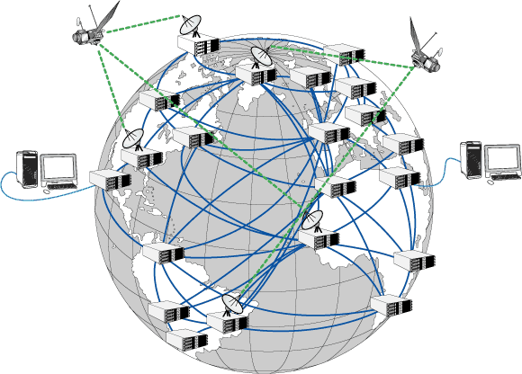

La structure des ordinateurs
Nous explorons les fondements des ordinateurs, comprenant leurs principes et leurs
applications.
Nous étudions en détail le rôle et le fonctionnement des composants d'un ordinateur, notamment en
nous basant
sur le modèle de Von Neumann, qui décompose l'ordinateur en quatre parties distinctes. Par ailleurs,
nous nous
plongeons dans la logique booléenne, qui sous-tend le comportement des ordinateurs.

La structure des réseaux
Les réseaux entre ordinateurs
Nous étudions les différents moyens par lesquels les ordinateurs peuvent être interconnectés, ainsi que les divers types de réseaux et leurs usages spécifiques. Nous examinons également les équipements nécessaires à cette interconnexion, ainsi que l'infrastructure sous-jacente qui la soutient.
